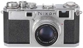

1953年6月6日万成设计，1954年10月开始生产，12月10日推出，到1958年3月停产，共生产了56715台。片幅为24x36mm，1-1/1000s快门，1:1取景，有闪光同步PC插孔和热靴，带快速卷片摇把。
S2是最成熟的机型吧，量产的经典款，而且篇幅也由原来的由24X34 S形改变为标谁24X36mm.上片的改进使得操作也非常方便，可以说是最亮骚的机器了，要是配上他家的闪灯以及定时按钮就完美无缺了，毕竟是经典，值得拥有一辈子的精品！
超亮骚！超耐用！值得拥有的好机器！配件比较难配齐，好不容易配齐一套超不容易了，镜头50MM 1.4 S.C红字版很不错，50MM2 中庸一点，但是锐利，105MM 2.5是一颗超级重磅炸弹，犀利而厚重的出片，很不错的一款头，就是超稀缺，此头重啊！
缺点个人感觉装取景器是比较麻烦的事情，快门比较短，要是AR-1快门钮加上还是很不错的，配105MM 2.5头时候有点头重脚轻的感觉，不过这个镜头托着倒是超有手感！出片，很出片！！！
这款Nikon S-2 是生产最多的.由24X34 S形改变为标谁24X36.比起Leica 的罗丝口机进步很多,方便牲也很强.每个曾用过L罗丝口机的用家都讨厌它的上片情况.但S-2没有那种毛病. 直到50年后今天我还爱用S-2.
坚固耐用.
除标头外一定要装观景器.另快门按钮太短, 要另加高. 在二手市场也比其他牌子高价.